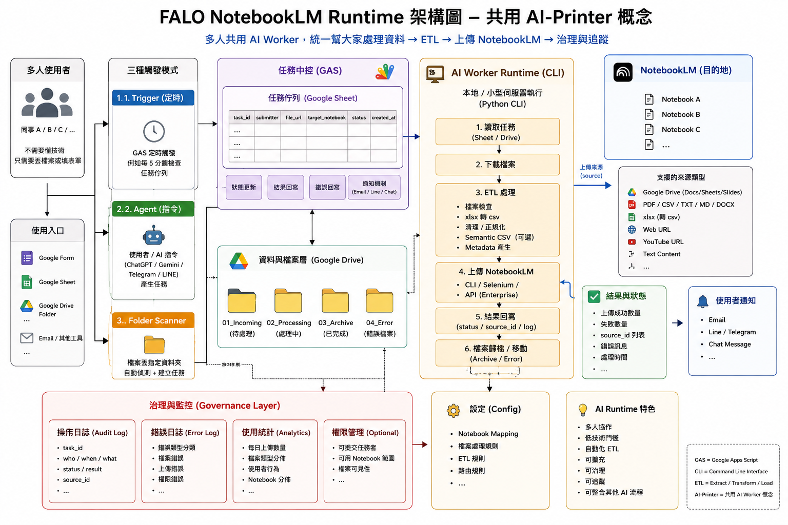

AI NotebookLM Runtime Lab v1.01
公開版改版筆記：保留 local-first runtime、ETL、project manager、command queue 與 governance 的教學精神，同時移除明確私人資訊。
Concept
NotebookLM 是知識庫目的地；Runtime 是前面的 AI Worker。使用者丟檔案或任務，Runtime 先檢查、排隊、轉格式、留紀錄，再送到指定 NotebookLM。

Architecture Layers
| Layer | Purpose |
|---|---|
| Portal | HTML UI，讓非工程使用者能選專案、選檔案、看結果。 |
| Runtime | Python service，負責掃描、queue、執行、log 與 adapter。 |
| ETL | Excel / CSV normalize、metadata 注入、資料分片與治理。 |
| Project | NotebookLM 專案清單、搜尋、排序、分頁、選取與新增。 |
| Governance | audit log、error log、evidence copy、匯入匯出與清儲。 |
| Command Package | 本機 JSON 指令包；未來可接 API、GAS、遠端主機。 |
Tabs
Simple Upload
主入口：選 project、選檔案或資料夾、選重名策略、執行上傳並查看結果。
Excel / CSV ETL
進階入口：xlsx 轉 csv、normalize、semantic CSV、metadata/tag 注入。
Project Manager
必要時 sync、新增 project、即時搜尋、點欄位排序、分頁大小可選。
Logs / Governance
查看 audit、error、runtime state、匯出、匯入與清儲。
Command Queue
用 JSON 指令包模擬多人派工、自動驗證、排隊、執行與歸檔。
Roles
user、document_manager、admin 三種最小角色，先把權限語意建立起來。
Command Package Example
{
"version": "1.0",
"app": "AI NotebookLM Runtime Lab",
"command_id": "cmd_upload_folder_demo",
"type": "upload_folder",
"submitter": "example_user",
"role": "document_manager",
"target_project_id": "REPLACE_WITH_PROJECT_ID",
"source": {
"mode": "folder",
"path": "data/source_pool/simple_upload/incoming",
"recursive": false,
"allowed_extensions": [".pdf", ".txt", ".md", ".docx", ".csv", ".xlsx"]
},
"upload": {
"duplicate_policy": "rename",
"evidence_root": "data/source_pool/simple_upload/evidence"
}
}
Public De-identification Rules
- 不放真實 Notebook ID、cookie、auth state。
- 不放本機絕對路徑或實際資料檔。
- 不放客戶、學生、組織內部資料。
- 範例一律使用 placeholder。
v1.01 的重點是先有可跑、可教、可追蹤的 MVP，再從實際使用反推 POC 與優化。